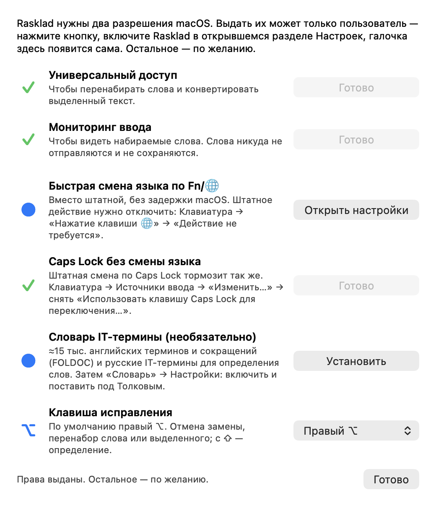

Rasklad
Бесплатный аналог Punto Switcher для Mac с открытым кодом. Печатайте по-русски и по-английски — Rasklad сам исправит слова, набранные не в той раскладке, — по словарям, которые уже есть в macOS.
Бесплатно · macOS 13+ · Apple Silicon и Intel · интерфейс на русском и английском · Исходный код на GitHub

Возможности
Встроенные словари macOS
Слова проверяются по орфографическим словарям, которые уже есть в macOS: ничего не нужно скачивать, работает без интернета и учитывает слова, добавленные через «Запомнить правописание». ⇧ + клавиша исправления показывает определение из системного «Словаря».
Автопереключение раскладки
По пробелу слово в неверной раскладке перенабирается: ghbdtn → привет, руддщ → hello. Слова, которые есть в обоих языках, — по языку фразы.
Опечатки и Caps Lock
Мелкие опечатки (првиет → привет), случайный Caps Lock (пРИВЕТ → привет), слово в двух раскладках, лишний пробел перед знаком препинания.
Клавиша исправления
По умолчанию правый ⌥: отменить замену, перевести текущее или предыдущее слово либо выделенный текст в другую раскладку. С ⇧ — определение слова.
Мгновенная смена по Fn/🌐
Переключает раскладку по Fn/🌐 без задержки macOS.
Не мешает
Не трогает редакторы кода, терминалы, блоки ``` и поля паролей. Исключения слов и приложений, своя раскладка для каждого приложения.
Приватно
Набранный текст никуда не отправляется и не сохраняется. Открытый код, лицензия MIT, без зависимостей.
Установка
- Скачайте Rasklad.dmg и перетащите Rasklad в «Программы».
- Первый запуск: Системные настройки → Конфиденциальность и безопасность → «Всё равно открыть» (приложение не заверено Apple).
- Выдайте «Универсальный доступ» и «Мониторинг ввода» в окне настройки.
Вопросы
Есть ли Punto Switcher для Mac?
Punto Switcher для macOS давно не обновляется. Rasklad — бесплатная замена с открытым кодом: автоматическое переключение раскладки RU/EN и исправление текста, набранного не в той раскладке.
Подойдёт ли вместо Caramba Switcher?
Да. Rasklad бесплатный и с открытым кодом, работает без интернета и никуда не отправляет набранный текст. Кроме смены раскладки он исправляет опечатки и случайный Caps Lock, есть клавиша исправления и мгновенная смена по Fn/🌐.
Какие языки поддерживаются?
Русская и английская раскладки (ABC или U.S. и «Русская»).
Нужно ли скачивать словари?
Нет. Rasklad использует встроенные в macOS русский и английский орфографические словари, а определения берёт из системного «Словаря». По желанию в окне настройки можно установить словарь IT-термины (FOLDOC и русские IT-термины).